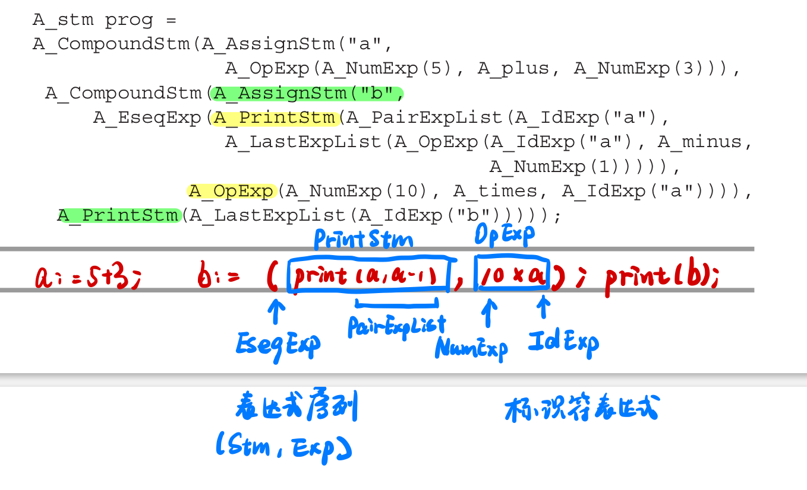

Languages
- object-oriented with dynamic methods
- functional language with nested scope & function closures
- garbage collection
Phases of a compiler

- Each phase is implemnted as software modules
- Interfaces
- Data Structures
- Abstranct Syntax(Parsing Actions-> Semantic analysis)
- IR Trees
- Assem
- Translate interface is a set of functions that the Semantic Analysis phase can call
- Tokens interface takes the form of a function that the Parser calls to get the next token of the input program.

- Context-Free Grammar（文法）, for parsing
- Yacc & Lex
- converts a grammar into a parsing program
- regular expressions, for lexical （词法）analysis
- Lex & Flex
- converts a declarative specification into a lexical analysis program
Data Structures for tree languages
Tree
Datastructures intermediate representations of th eprograms being compiled.
Tree representations can be described with grammars, just like programming languages.
Example: Straight-line programs
a simple programming language with statements and expressions, but no loops or if-statements

4 kinds of Grammer:
Stm: StatementsExp: Expressions- EseqExp（表达式序列）
(s, e)：在计算表达式e并返回结果之前先计算语句s的副作用
- EseqExp（表达式序列）
ExpList：用作print的参数列表Binop
typedef char* string;
typedef struct A_stm_* A_stm;
typedef struct A_exp_* A_exp;
typedef struct A_expList_* A_expList;
Each grammar symbol’s struct contains a union to carry these values, and a kind field to indicate which variant of the union is valid.
 描述Statement
描述Statement
struct A_stm_ {
enum {A_compoundStm, A_assignStm, A_printStm} kind;
union {
struct {A_stm stm1, stm2;} compound;
struct {string id; A_exp exp;} assign;
struct {A_expList exps;} print;
} u;
};
描述Expression
struct A_exp_ {
enum {A_idExp, A_numExp, A_opExp, A_eseqExp} kind;
union {
string id; // For IdExp
int num;
struct {A_exp left; A_binop oper; A_exp right;} op;
struct {
A_stm stm;
A_exp exp;
} eseq;
} u;
};
描述Expression List
struct A_expList_ {
enum {A_pairExpList, A_lastExpList} kind;
union {
struct {A_exp head; A_expList tail;} pair;
A_exp last;
} u;
};
描述Binop
typedef enum {A_plus,A_minus,A_times,A_div} A_binop
构造函数
A_stm A_CompoundStm(A_stm stm1, A_stm stm2);
A_stm A_AssignStm(string id, A_exp exp);
A_stm A_PrintStm(A_expList exps);
Programming Style
- Trees are defined by a grammar
- Trees are described by one or more
typedefs, corresponding to a symbol in the grammar. - Each
typedefdefines a pointer to a corresponding struct. The struct name, which ends in an underscore, is never used anywhere except in the declaration of the typedef and the definition of the struct itself - Each
structcontains akindfield, which is anenumshowing different variants, one ofr each grammar rule; and aufield, which is a union. - 如果Rule右边有多个nontrivial(含值)的symbol，union中类型为含这些值的struct
- 如果就一个nontrivial symbol，则就含该值
- 所有类都有一个构造函数
Modularity principles for C programs
- We will never call
free
直线式程序解释器
- 环境（符号表，映射变量名和相关信息）environments (symbol tables mapping variable-names to information about the variables)
- 抽象语法abstract syntax (data structures representing the phrase structure of programs)
- recursion over tree data structures, useful in many parts of a compiler
- functional style of programming without assignment statements

 递归找
递归找PrintStm
我想函数式编程还是有个immutability的问题在。可能这就是初始化和赋值的本质区别。
make two mutually recursive functions interpStm and interpExp. Represent a “table,” mapping identifiers to the integer values assigned to them, as a list of id × int pairs.
Table_ interpStm(A_stm s, Table_ t)
Takes in a table, returns a new table.